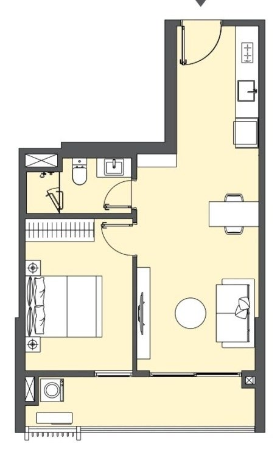
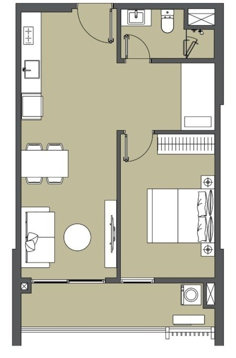
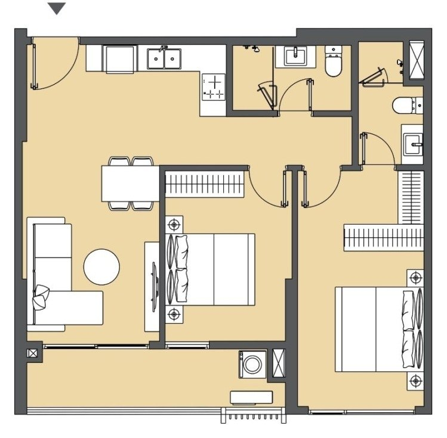
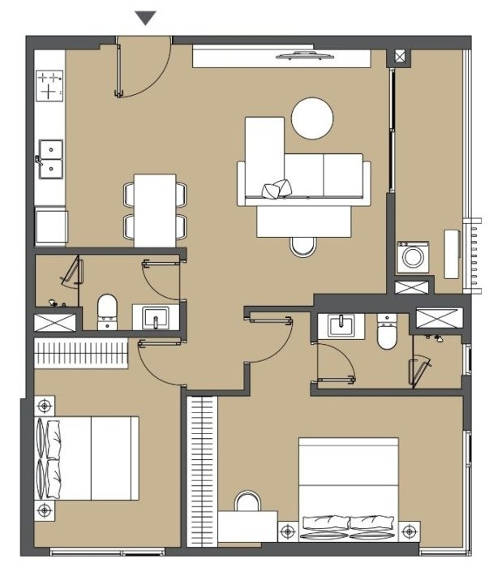
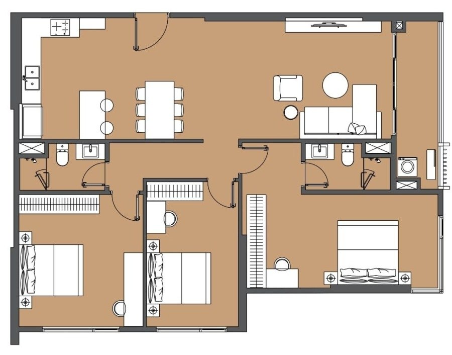
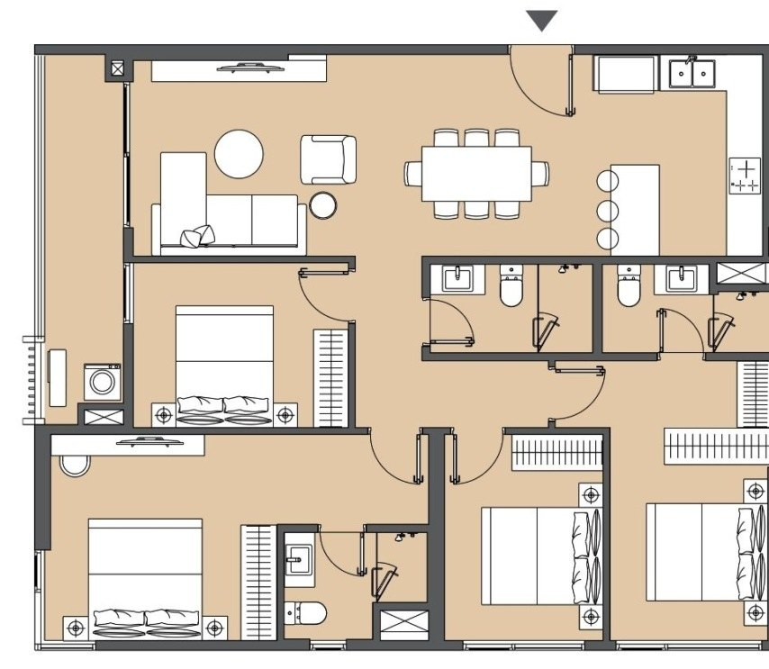

Masteri Cosmo Central (The Global City, Thủ Đức): thông tin dự án và 6 mặt bằng căn hộ
1. Tóm tắt nhanh
Đỗ Xuân Hợp
đã thu thập
khác nhau rõ rệt
Masteri Cosmo Central là phân khu mới của Masterise Homes trong The Global City, ra mắt ngày 15/1/2026 với 6 tòa cao 19–29 tầng. Bài này tổng hợp 6 mặt bằng căn hộ công bố.
| Hạng mục | Thông tin |
|---|---|
| Tên dự án | Masteri Cosmo Central (The Global City) |
| Chủ đầu tư | Masterise Homes |
| Địa chỉ | Đường Đỗ Xuân Hợp, phường An Phú, TP. Thủ Đức |
| Quy mô | 6 tòa 19–29 tầng; căn 1–4 phòng ngủ, duplex, penthouse |
| Ra mắt / bàn giao | Ra mắt 15/1/2026; bàn giao dự kiến 2028 |
| Giá tham khảo | Chưa có bảng giá chính thức; giá theo căn khoảng 6–25 tỷ |
| Giá bán chính thức | Chưa có bảng giá chính thức trong bài; xem mục 5 |
2. Vị trí
Dự án nằm tại Đỗ Xuân Hợp, phường An Phú, Thủ Đức. Bài chỉ nêu thông tin công bố, không đánh giá vị trí.
3. Sản phẩm
Bảng dưới đây liệt kê toàn bộ mặt bằng đã thu thập; những mẫu có diện tích gần như trùng nhau được ghi chú “cùng mặt bằng”, và phần hình chỉ đặt các mặt bằng khác nhau. Diện tích có thể khác nhau tùy nguồn (tim tường hay thông thủy); cột trống nghĩa là tài liệu không công bố.
| Loại / mã | Số PN | Tim tường (m²) | Thông thủy (m²) | Ghi chú |
|---|---|---|---|---|
| 1BR | 1 | 53,3 | 48,4 | |
| 1BR+ | 1 | 56,7 | 51,7 | |
| 2BR | 2 | 76,1 | 69,9 | |
| 2BR+ | 2 | 81,8 | 75,2 | |
| 3BR | 3 | 121,3 | 113,7 | |
| 4BR | 4 | 119,1 | 110,6 |
Căn hộ 1 phòng ngủ


Căn hộ 2 phòng ngủ


Căn hộ 3 phòng ngủ

Căn hộ 4 phòng ngủ

4. Tiện ích và thiết kế
Thông tin tiện ích chi tiết xem trang chính thức của dự án; bài này tập trung vào mặt bằng căn hộ.
5. Giá tham khảo (gần đúng)
| Nguồn / loại căn | Mức giá | Ghi chú |
|---|---|---|
| Giá theo căn (Rumavi) | 6–25 tỷ | Không tách theo m² |
| Một trang tổng hợp (độ tin cậy thấp) | từ khoảng 126 triệu/m² | Chưa xác minh |
Chưa có giá chính thức theo m²; mức từ khoảng 126 triệu/m² chỉ là thông tin chưa xác minh.
6. Tiến độ và nguồn cung
- Chưa có thông tin chính thức trong bài: số căn từng mẫu, bảng giá hiện hành và tiến độ chi tiết; hãy hỏi chủ đầu tư.
7. Kết luận
Bài tổng hợp các mặt bằng đã công bố của Masteri Cosmo Central (The Global City) để dễ đối chiếu. Khi cân nhắc một căn cụ thể, hãy xác nhận mã căn, diện tích tim tường và thông thủy và giá hiện hành với chủ đầu tư.